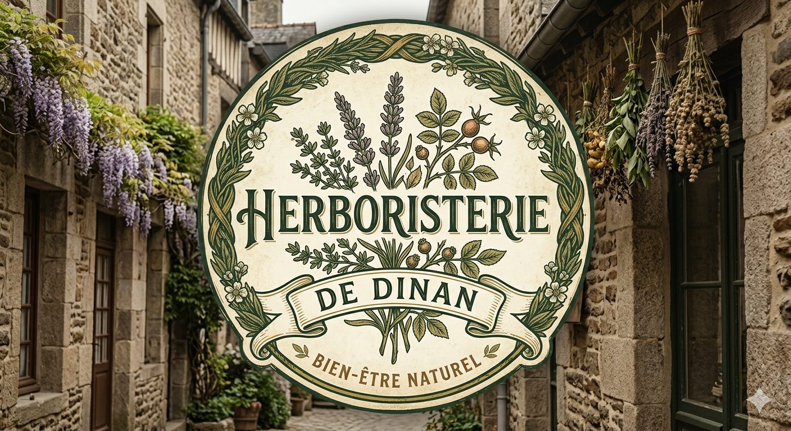
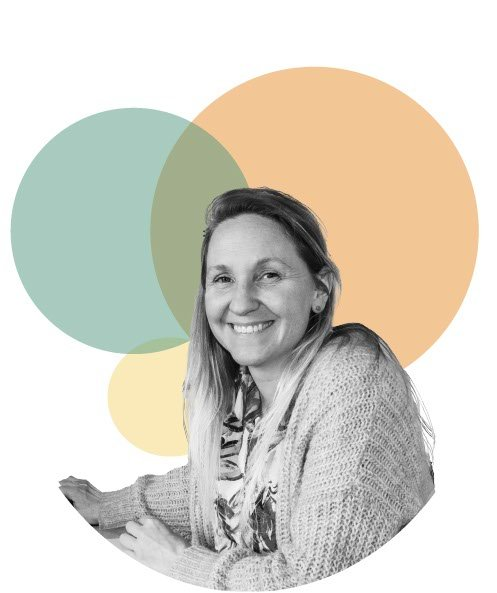

Trois praticiennes, trois approches complémentaires pour prendre soin de vous.
Naturopathe · Praticienne NAET · Herboriste
Après un parcours dans le secteur commercial, Céline se réoriente vers la naturopathie, qu'elle étudie à la Faculté libre de Naturopathie de Dijon (école affiliée à la FÉNA), et devient adhérente de l'OMNES. C'est en testant la méthode NAET durant sa formation qu'elle découvre 33 intolérances alimentaires la concernant - une expérience personnelle qui la pousse à se spécialiser dans cette méthode pour accompagner à son tour ses clients.
Reconnue par l'OMS comme la 3e médecine traditionnelle mondiale, la naturopathie adopte une approche holistique de la personne. Elle s'appuie sur cinq principes hérités d'Hippocrate (ne pas nuire, la nature comme guérisseuse, identifier les causes, détoxifier, enseigner) et mobilise dix techniques : alimentation, exercice physique, gestion du stress, hydrothérapie, phytologie, techniques manuelles, respiration, réflexologie et techniques énergétiques. Elle accompagne les déséquilibres digestifs, hormonaux, nerveux, cutanés ou ostéo-articulaires. La première séance (anamnèse complète) dure 1h à 1h30, les suivantes 45 min à 1h.
Créée en 1983 par le Dr Devi Nambudripad, la méthode NAET est une approche naturelle, non invasive et indolore visant à éliminer les réactions liées aux allergies et intolérances. Elle repose sur le test musculaire (kinésiologie) pour identifier les substances en cause, puis l'acupression pour rétablir la circulation énergétique, suivie d'une éviction de 25h. Elle peut aider face aux allergies classiques mais aussi à des troubles moins évidents : maux de tête, troubles digestifs, douleurs musculaires. La première séance dure 1h30 à 2h, les suivantes 1h à 1h30.
Conseil personnalisé en plantes médicinales et tisanes : identification des plantes adaptées à vos besoins (digestion, sommeil, stress, immunité...), posologie, précautions d'usage et interactions à connaître, en complément - jamais en remplacement - d'un avis médical.
Naturopathe · Esthéticienne · Herboriste
Parcours et présentation détaillée à venir.
Approche holistique de la santé par des moyens naturels : alimentation, gestion du stress, phytologie, hygiène de vie. Objectif : soutenir les capacités d'autorégulation du corps plutôt que de traiter un symptôme isolément.
Soins du visage et du corps à base de produits naturels et de plantes médicinales, pensés en cohérence avec une approche naturopathique globale plutôt qu'en soin isolé.
Conseil personnalisé en plantes médicinales et tisanes, en complément - jamais en remplacement - d'un avis médical.

Praticienne certifiée en Neurofeedback (Neuroptimum®)
Bretonne d'origine, Charlotte a passé 22 ans au Québec avant de revenir en France en 2022. Après un parcours professionnel varié, elle se forme et se certifie au neurofeedback thérapeutique auprès de Neuroptimum®, ainsi qu'au programme MBSR de réduction du stress basée sur la pleine conscience. Elle s'appuie sur son expérience personnelle du neurofeedback pour proposer un accompagnement bienveillant, respectueux du rythme de chacun.
Méthode douce et naturelle qui, via des retours sensoriels (visuels, auditifs, tactiles), aide le cerveau à réajuster son activité et à s'autoréguler sans effort conscient. Peut accompagner le stress et l'anxiété, les troubles du sommeil, les migraines, les douleurs chroniques, les troubles de l'humeur, les difficultés de concentration et le brouillard mental. S'adresse aux enfants, adultes et seniors, ainsi qu'aux sportifs et cadres en recherche d'optimisation de leurs performances. Chaque séance est personnalisée selon les besoins de la personne.
N'hésitez pas à nous écrire, nous vous répondons rapidement.
Nous contacter